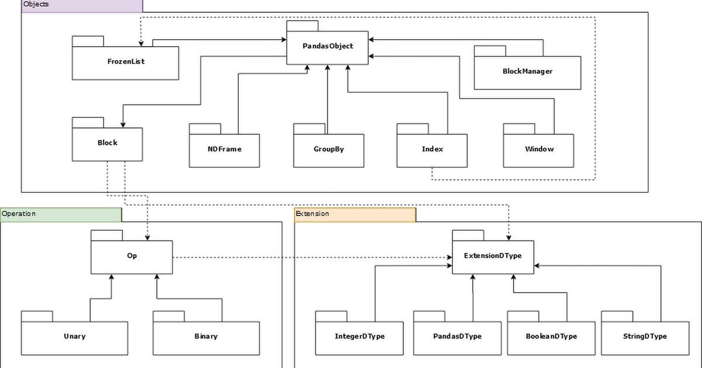
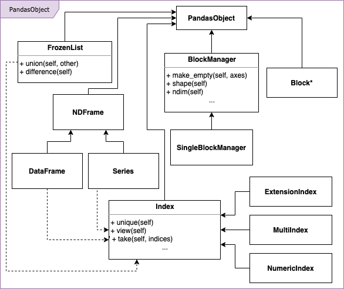
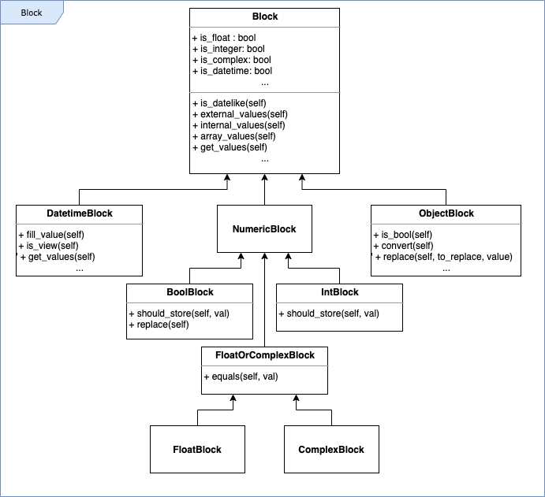
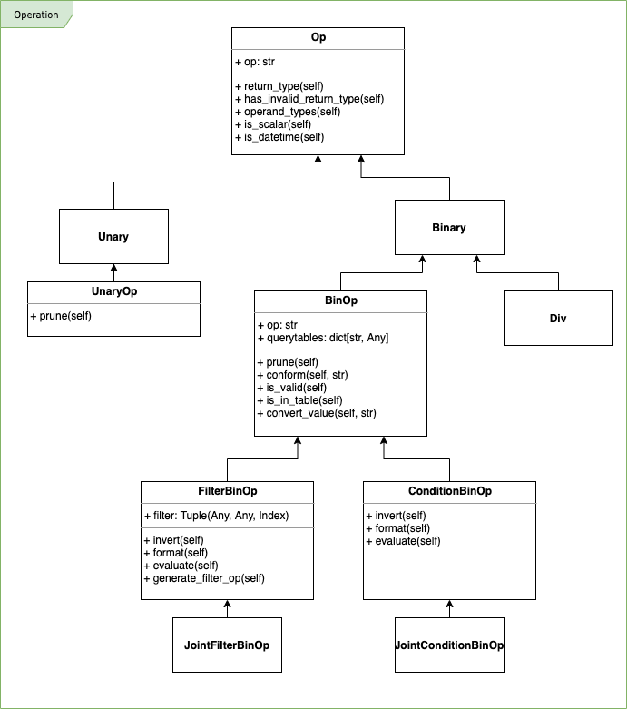
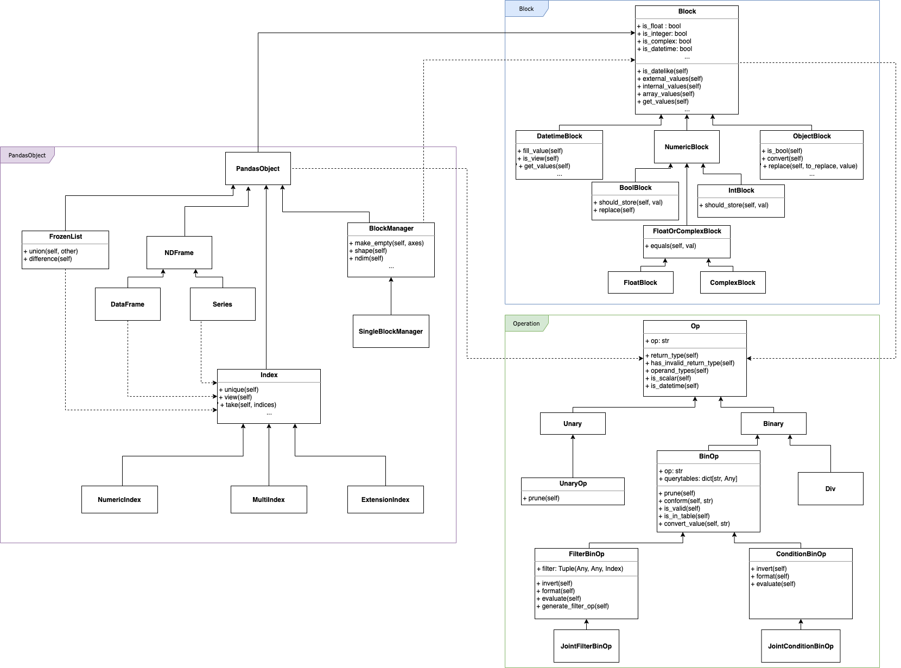
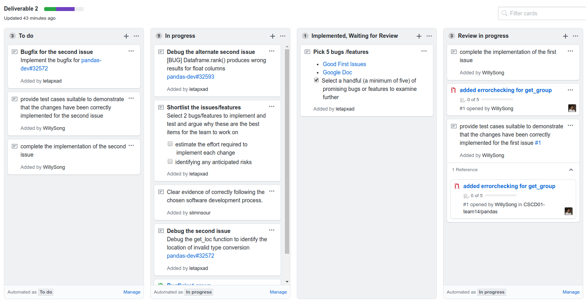
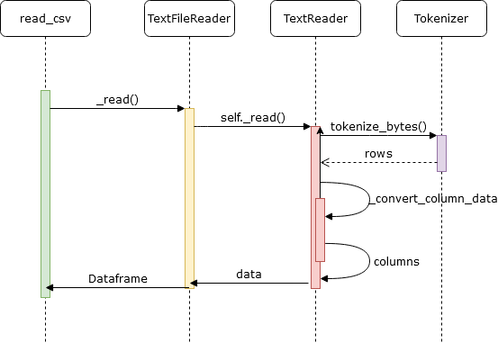
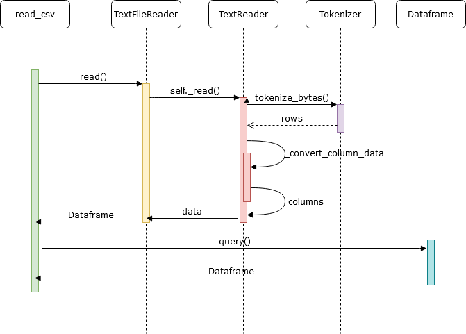
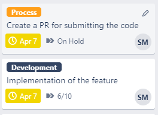
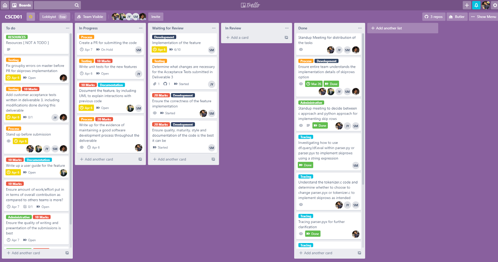

Deliverable 1
Architecture of Pandas
Introduction
First, we have a UML Package Diagram to show the overall structure of pandas:

Pandas Object
In this structure, you can see that the majority of pandas is object-based. Pandas is focused around creating complex objects used for advanced data analysis, so a lot of its functionality is just creating those objects, and adding operations and extensions
to supplement the objects.
Some example PandasObjects that can be seen in this diagram are FrozenLists, NDFrames, and Blocks. These all inherit from the main PandasObject class, which we will get into more detail in the next section.
Operation
The Operations section has a main operation class, and is split into Unary and Binary Operation children. There is also a special MathCall operation child used for special math operations, but we did not include it in the diagram for simplicity. These
operation classes allow pandas to extend the class of operations for scalability and use with other objects. We will also go into more detail on this in the following sections.
Extension
The Extension section is similar to the Operations section in that it allows pandas to define their own types for scalability. Some example types shown here are IntegerDType, BooleanDType, and StringDType. There are more ExtensionDType children that we
are not showing here for simplicity, but the main point here is that pandas uses these types when constructing their objects for added functionality and efficiency.
Pandas Object and its extensibility
Next we have a more in depth look at the Objects section:

This deeper look into the Objects section shows the types of functions and children PandasObjects can have.
The children of PandasObjects each have functions that can be overridden by their children, and define what the object is used for. For example, FrozenList has a union and difference operation, defined exactly as a list union or difference operation in
mathematics. These functions make it easy to see what an object is capable of and what each of its children will have/override.
Furthermore, there exists subchildren for some of the PandasObjects. Some examples shown here are that NDFrame has DataFrame and Series subchildren, and Index has ExtensionIndex, MultiIndex, and NumericIndex subchildren. This shows that pandas uses inheritance
to define more specific types of data structures and tools needed for their functionalities.
*Note: There is an asterisk around Block because it is a more complex object we will go into more detail next.
Block Class
Now for a more in-depth look on what the Block class is about:

In pandas, a block is an n-dimensional unit of a homogeneous type. It is used internally for holding values of a certain type, which is useful for managing analysis of several types in a programming language like Python.
The main Block class has several functions that each of its children will inherit, like is_datelike(), internal_values(), and get_values(). These are all about getting information about the values that the Block is holding in some fashion, as that is
its main role.
There are several Block subchildren, such as DatetimeBlock, NumericBlock, and ObjectBlock. These can go even deeper as shown, branching off to BoolBlock, FloatBlock, etc. As you can see, pandas makes the effort to support different typing for clarity,
which is useful for the wide array of data analysis that it is used for.
Implementation of Operations

Similarly to the Block section, the Operations section is split into different types for scalability purposes. It is also important to note that each operation is held as a string, as shown in the op string in attributes of Op.
Like we mentioned before, there are Unary and Binary Operations that are the main children of Op. The Binary class has subchildren as well, splitting off into BinOp, and then into FilterBinOp and ConditionBinOp.
Detailed look
Putting it all together, we have a more detailed look between the classes in pandas:

Software Development Process: Kanban
Description of the Process
We aim to make small, incremental changes to the Pandas project, for this reason, we choose Kanban as our Agile Methodology.
Why Agile
-
The issues that we will be working on may not have everything laid out for us to complete, so we want to be able to adapt to change and new plans we make to complete any given tasks.
-
We also want to embrace change pretty easily as it is good for identifying new tasks to complete in a large codebase.
-
We want to recognize the fact that we have a small team of experienced programmers, and spending too much planning would be wasted and restrictive as we can figure our way around tasks easily.
-
Finally, we want simplicity in our development as it would be easier for us to understand the scope of our contribution, and it would be more likely to be integrated into the main codebase.
Why Kanban
-
The nature of issues we will be focusing on, align well with core principles of Kanban:
-
Having a set of tasks visually represented makes it easier for us to take initiative and plan it out with other assignments.
-
Start with what you do know:
Considering Pandas is significantly large Software being improved and modified by many developers, Kanban’s versatility and flexibility will make it easy to implement the workflow and follow contributing guidelines set by panda’s
community.
-
Agree to Pursue Incremental, Evolutionary changes
Small changes to pandas due in next deliverable are the perfect candidate that will demonstrate minimum resistance to the ongoing development.
-
Respect the current Process, Roles and Responsibilities
Rather than developing a groundbreaking library from scratch ourselves, our aim is to preserve current processes in place for pandas. As contributors, we aim to set reasonable expectations while maintaining respect for the current
process.
-
Encourage acts of leadership at all Levels
This principle especially aligns with the core principle of our team. We strive to achieve optimal performance in our tasks by leveraging each team member’s Strengths.
-
To fully follow the Kanban workflow we are using Github Project Boards set up Cards and necessary columns. This enables us to keep track of progress and contributions from each team member.
-
Using Github Project Boards is the best choice since linking issues and pull requests directly to the card on the board is seamless.
-
In addition to having accurate visualization of current work the Kanban board will allow us to maintain our focus on a specific number of tasks as we enforce WIP limits for cards in the in-progress column.
Pros and cons with other processes
Considering the requirements presented above we can conclude we have two primary methods to choose from - Scrum or Kanban. The following table summarizes pros and cons of choosing Kanban over Scrum:
| Pros |
Cons |
- Kanban focuses on development over the business
- Requirements are primarily created early while continuous. Because no “client” exists, there is no need to constantly revise requirements.
- Our contributions would not be large enough to justify a full plan-driven model of Scrum.
- Enforcing strategies that are strong foundations of Scrum is extremely difficult to manage as we might be working on different deliverables where tasks don’t transcend across several sprints.
- Kanban makes it easier to distribute work evenly.
- Kanban board columns can be adapted to fit our individual skill sets.
|
- Kanban doesn’t support deadlines, will have to create our own on a person-to-person basis.
- Kanban is very similar to scrum so we will have to be careful.
|
Modifications to Kanban
Because of time constraints, it is not feasible to have Daily stand up meetings. As an alternative, we have a dedicated Discord channel where we report daily progress as each team member becomes available.
Deliverable 2
Picked 6 Bugs or features
Issue 1: Type hint of DataFrame(...dtype...) excludes numpy scalar types such as np.int8
https://github.com/pandas-dev/pandas/issues/31872
DataFrame, a common object in pandas, throws a warning with a type check when using type np.int8 in its values. Currently, DataFrame can only hold the following types: str, np.dtype, and "ExtensionDtype". These are the python string primitive, a data
type object from numpy, and an extension data type object from pandas itself. When numpy integers are thrown in for a DataFrame (constructing a dataframe using pandas.DataFrame(data=d, dtype=np.int8), a type check error is thrown because
np.int8 is not part of nor an instance of str, np.dtype, and "ExtensionDtype".
To complete, we would likely go with the suggested solution of adding np.generic (a parent of np.int8) to the accepted types for the pandas DataFrame object. This would take nearly 2 hours to find the location of pandas DataFrame and its accepted types
and then adding np.generic, and it would take another hour to test and make sure it does not break anything in the process.
Issue 2: BUG: get_loc / get_indexer with NaT and tz-aware DatetimeIndex
https://github.com/pandas-dev/pandas/issues/32572
One type that pandas uses for tracking datetimes better is NaT, which stands for Not a Time. This is similar to NaN, which is common in all languages as Not a Number, which represents missing or illegal number values. In the same fashion, NaT is put in
place for missing datetime values. For the bug, when get_loc (a function for converting a datetime to a local time) is called on a NaT value, the result is 0. Furthermore, when it is used to convert to a different time zone, then it
throws an error.
To complete, it would take about 6 hours to investigate both parts of this issue, determining why 0 is returned for local time and figuring out what the type issue is when converting to a different time zone. It would then take another 2 hours to fully
test our solution and make sure it does not break anything else in the code.
This was one of the issues we chose to tackle at first. After many hours of debugging, we figured out that the problem is in the logic, get_loc inside Index class is not properly handling some cases that are of “na” type: None, NaT,.. Adding the fix would
be easy, we simply checked for those cases using isna function.
Issue 3: dataframe.groupby incorrect with multiindex and None value
https://github.com/pandas-dev/pandas/issues/32492
This bug concerns pandas’ groupby function. The group by function is defined as it would be in any other data management system; it takes input column names and then aggregates data across those columns. When you groupby on a DataFrame in pandas and do
not specify all the columns, then you will lose some data (as expected). However, when you try to call get_group on a list of items on the group by result that should not exist, it does not return a KeyError as expected.
To complete, it would take about 7 hours to investigate both the groupby and get_group function logic and determine the best way to fix it. It would also take another 2 hours to test our solution against our own requirements and the rest of the code.
Issue 4: Rows order when using slice(None) on MultiIndex Dataframe.loc
https://github.com/pandas-dev/pandas/issues/31330
This issue is based around a cosmetic bug when printing a DataFrame. When printing a DataFrame with several column hierarchies (ex. Cats: Black, Brown, …, Dogs: Black, Brown, …), pandas automatically sorts them using the order that they were inputted
when the DataFrame was created. This makes sense, but when the DataFrame is printed with a different hierarchy specified (Brown -> Black instead of Black -> Brown), the result DataFrame does not take the hierarchy specified into account,
and just prints what it would originally.
To complete, it would take about 5 hours to investigate the organization of DataFrame data and the print functions available to it and determine the best way to print the cosmetic result. It would take another 1 hour to check for edge cases of our fix
and test against the rest of the codebase.
Issue 5:Inconsistency/bug when selecting from a data-frame using an unsorted DatetimeIndex
https://github.com/pandas-dev/pandas/issues/30736
This issue involves inconsistent indexing in pandas. In pandas, you can create an index of a range of values that you want, like between the min and max of your data or between two datetimes. The example on the issue page shows how sometimes, when creating
a DataFrame out of a disordered index, inconsistent and buggy results occur. Specifically, if you just want to add an hour value to the end of your range when you are selecting from your data, a KeyError occurs with an uninformative
message.
To complete, it would take about 6 hours to investigate the cause of the KeyError bug and determine a clean, scalable way to fix the way indexing works in this case. It would take another 2 hours to test our fix against our requirements and the rest of
pandas’ test suite
Issue 6: [BUG] Dataframe.rank() produces wrong results for float columns
https://github.com/pandas-dev/pandas/issues/32593
This bug concerns the Index’s rank() function for sorting columns in Dataframes. The specific issue is when infinite values are entered: For some reason, numpys np.inf is not always selected as the largest number in the ranking. This would raise problems
in mathematical analyses which one of pandas’ main uses, so this issue would be very beneficial to tackle.
To complete, it would take about 6 hours to investigate the reason why rank would mess up with some float columns and specifically np.int, and find a reasonable way to fix the ranking. It would take another 2 hours to test our fix against our requirements
and the rest of pandas’ test suite.
Our Chosen Issues
Issue 3: dataframe.groupby incorrect with multiindex and None value
https://github.com/pandas-dev/pandas/issues/32492
Summary
We chose this issue because it seemed of medium to significant difficulty, and would give us a greater understanding of the codebase (finding out about different types and how pandas deals with it, as well as looking at functions between objects as in
groupby). It also looks like an issue that would clear a lot of confusion for users of pandas, which is one of our team goals (increasing the usability of the project).
Potential Risks: While groupby does seem to have a specific use outside of pandas internal files, it may be used directly from certain functions inside pandas for efficiency. This could raise a problem if these other functions
are expecting to get results from group by in its current state, even if this current state is incorrect. To accommodate for this we will be running our solution against the entire test suite after our fix and make sure to go through
each potential failure to ensure we are not breaking anything else in our change
Issue 6: [BUG] Dataframe.rank() produces wrong results for float columns
https://github.com/pandas-dev/pandas/issues/32593
Summary
We chose this issue because it also seemed of medium to significant difficulty, and would give us a better understanding on the deeper logic of pandas. Like we mentioned in the summary, this could go deep into pandas’ code as it may have to do with dealing
with core comparison logic. It also seems like something that would fix a lot of other issues if done correctly, which would be a great use of our time.
Potential Risks: Thinking through this issue, this seems like this is likely a type ordering issue which fixing could have other ramifications. Specifically, depending on how the code is organized, there may be a function
that we need to change to accommodate for our specific example’s fix, and this function could be used for other ordering algorithms that depend on the function in different ways. We will again make sure to run our solution against
the entire test suite after our fix and make sure we are not breaking anything else in our change
Software Process Proof
As we stated in Deliverable 1, we used Kanban as our software process of choice when fixing the selected issues. This involved setting up the Kanban board, opening necessary communication channels, and making sure every task was completed by the due date.
Here we will go over how we followed Kanban to complete this deliverable.
Kanban Board
Link to the Board
As planned, we used Github’s Projects board as our Kanban board. We first set up our board with the proper columns to track the lifetime of an issue: To do; In progress, Implemented; Review in Progress, Reviewer approved, waiting for merge; Merging; Done.
We then split up our assignment into tasks that would be put together to complete the work needed for the deliverable (ex. Choosing five issues to develop, and Shortlisting it to 2 issues). For each task, as per Kanban guidelines, we made sure to write
a small description of the task, how long it would take, link the necessary resources, and its deadline. Given that we filled out each task with a corresponding description, and knew the estimated time, we were sure that each of the tasks
would be completed (and therefore the deliverable) by the due date.

Daily Asynchronous Standup Meetings
Another part of the software process that we agreed on is doing virtual standup meetings to update the other group members on progress. We did this in a dedicated channel in our method of communication Discord called “daily-standups”. Every
day near the end of the project, we would send messages like the one shown below to update other team members on what we are currently doing for the project.
As you can see, each message would consist of a “Do” part for what was done that day, “Todo” for what they have left to do in the future, and “Blocked” for what they need to do but cannot because of some dependency they are waiting on (another team member’s
task, external dependency like a pull request, etc.) This worked great for us because we were able to stay updated with each other while not compromising our busy schedules as students. Furthermore, it allowed for follow up questions and
conversation, which is not as easily applicable through just the Kanban board.
Why Kanban Came in Handy
Using Kanban helped us in the project because we were allowed flexibility in our development. For any task in the Kanban board, we were allowed to update it or add new tasks as our understanding of the issues increased over the course of the deliverable.
Since Kanban emphasizes continuous updates, we had that flexibility to reroute at any time to ensure the deliverable was completed. For example, when we wanted to investigate other issues to try and implement, we were able to record what
we were currently working on and place it in the “To do” column, as well as add new tasks relevant to the new issue and place it in the “In progress” column.
It was also extremely helpful since we were able to accomodate for our busy schedules as students by having a visual guide to completing the work for the deliverable. Every day we could check at any time what tasks needed to be done and how long it would
take for them so each team member could fit it into their schedule correctly (among their other assignments). This way we were able to complete all tasks asynchronously, while also staying active on the Discord for synchronous communication.
Technical Commentary
Issue 3: dataframe.groupby incorrect with multiindex and None value
https://github.com/pandas-dev/pandas/issues/32492
How these changes affect the design
The bugfix implemented for the get_group function does not affect the overall structure of the project. This bugfix is adding a verifier to the output of a helper function (_get_index) within get_group. The helper function sometimes gives an unexpected
output but is used in many more functions than get_group so we decided to add a verifier within get_group to preserve as much of the codebases’ integrity as possible. Thus, “pandas/core/groupby/groupby.py” was the only file that
was changed as it is the file with get_group.
The only issue that arises is that many other functions call upon the get_group function. When running the extensive pytest pandas test suite, we will see a few (12) test cases fail now as they are given a different error. Previously, they were using
invalid input and expected a different error to appear through the use of a different function. These test cases will have to be revised and updated, but that is beyond the scope of this bugfix.
Pull Request
Test suite
Issue 6: [BUG] Dataframe.rank() produces wrong results for float columns
https://github.com/pandas-dev/pandas/issues/32593
How these changes affect the design
The bugfix does not affect the structure of the project. It just slightly changes the behavior of rank of DataFrame when DataFrame consists of floats. The only thing that changed is rank_2d function inside algos.pyx file in pandas/_libs folder.
More details about the bug and rank_2d function:
Rank function is supposed to assign ranks for numbers inside the DataFrame (either ascending or descending). Suppose we have a data frame of 1 column: [9, 2, 3]. Since 2 is lowest, it gets rank 1; 3 gets rank 2; and 9 gets rank 3. We’re using all valid
numbers here, but the column can also contain np.nan (not a number), np.inf (infinity), -np.inf (minus infinity). When the data type of the dataframe is int, they should all be the same because infinity is not a valid number for
int.
However, inf and -inf are valid numbers for float, in particular, inf would be the largest number, and - inf is the lowest. So you would expect df.rank() to rank them like that, however that is not the case. If you are ranking ascending, then inf is treated
as nan, and if you are ranking descending, -inf is treated as nan (because for type(int) it is the same). In particular, they assigned nan_value = np.inf (for ascending case) and nan_value = -np.inf for float case. We changed this
to nan_value = np.NaN instead.
Pull Request
Test suite
Deliverable 4
User Guide
skiprows : callable, optional (Option for read_csv())
Lines to skip based on the callable function. The callable function will be evaluated against the row values, returning True if a row should be skipped and False otherwise.
An example of a valid callable argument would be: “col_1 > 2 and col_3 == 4”
To use, first create a callable as a string:
mask = "(area > 8.516 or area < 3.286)"
Then add in the skiprows parameter to your read_csv function.
df = pd.read_csv('brics.csv', skiprows=mask, dtype=schema)
Design Document
Overview of Feature
Before our implementation, pandas was missing the functionality to skip rows based on a string query. This way users can filter rows based on its contents, instead of just the row numbers which is all that the current skiprows supports.
This would involve passing in a boolean query that would indicate the conditions for each column (like “population > 1200”) and any row that does not pass is eliminated from the import.
This would help improve usability and make trimming down input significantly easier than current workarounds.
Investigating the Relevant Code
For our implementation, we made sure to investigate where would be the best place to put in our changes. Reading a csv in pandas involves several levels going all the way down to the io layer, which is written in c (more specifically, Cython) to increase efficiency.
Here is a high level trace of the essential and relevant pieces of code when reading a csv:

read_csv: https://github.com/pandas-dev/pandas/blob/master/pandas/io/parsers.py#L683
This would help improve usability and make trimming down input significantly easier than current workarounds.
TextFileReader: https://github.com/pandas-dev/pandas/blob/master/pandas/io/parsers.py#L449
This is the python object used for managing all the data read in a text file. In this case it is a csv file, but the data is treated the same: holding the rows, columns, and metadata about the file. The TextFileReader has several useful functions like read() that we will be following to see how it interacts with the actual files.
TextFileReader.read(): https://github.com/pandas-dev/pandas/blob/master/pandas/io/parsers.py#L1128
This is where the TextFileReader interacts with Cython and the c file. Specifically, it calls it’s engine (c or Python)’s parser to get the data from the specified file and then organizes it into columns and rows in the TextFileReader’s attributes. This is then passed back up to read_csv as readable data in a Dataframe format.
Tokenize_bytes(): https://github.com/pandas-dev/pandas/blob/master/pandas/_libs/src/parser/tokenizer.c#L711
This is where the c file reads the data from the file. It is called tokenizer because it treats each character and string in the file as a token, and depending on what the token is it modifies the data sent eventually sent back up to TextFileReader. It uses a switch case to go token by token in a line by line format, checking whether the current token is a character to add on to the previous token, a delimiter, a new line, and so on. Note that at any point in the tokenizer file, the strings are only treated as strings or characters.
Skiprows comes into play here by keeping a counter of what row the tokenizer is at. If the current row is one to be skipped as specified by the list of rows, the number of rows from the start, or the lambda function, then the tokenizer just goes to the next new line and therefore ignores the specified row.
Details for Implementation
For our implementation, we decided to make use of pandas query() function to ensure better integration with the code. The pandas query function takes in a dataframe and a boolean expression and filters the dataframe based on whether the specified column values pass or fail the boolean expression. An example of this would be to filter out certain cities in Ontario based on population, assuming there is a “population” column you can pass in the full dataframe with the data and then query “(population > 1200)”.
By using query when the Dataframe is created we can ensure that our code is depending on query functionality already existing in pandas. This allows for easier integration in the code, with the added benefit of not needing to specifically change how the filter works in read_csv if new changes in query are made. This allows for a way for the users to easily filter out data from their csvs when importing it into pandas.
The reason we did not edit the actual tokenizer.c file to filter the rows is due to the current implementation. As we mentioned before, the tokenizer file that reads in the data for the csvs is done reading the file as one would normally do it: reading left to right, line by line. Skipping specific rows by row numbers in this format is easy because one would just need to keep a counter for what the current row is, and skip to the next line if the current one needs to be skipped. This is why the current skiprows functionality only focuses on specific row numbers.
However, skipping rows based on specific column values with this format is not feasible. For example, say you wanted to skip a row based on whether its fifth column value. To do this with the current implementation of reading csvs, we would have to read the first five column values anyways, to know where the fifth value is located. We would also have to implement a way to translate the tokens into pandas comparable format, since they are all treated as strings in the tokenizer. This is why we went with implementing the query functionality when the Dataframe is actually created.
With the code changes specified in this commit link, we have our new sequence diagram:

Acceptance Tests
Acceptance Test #1:
The ‘customer’ (issue creator) provided this example file
# data file path: foo/bar/data.csv
|
col_1 |
col_2 |
... |
col_n |
| 0 |
940 |
15 |
... |
0.023 |
| 1 |
1040 |
52 |
... |
0.430 |
| 2 |
1530 |
52 |
... |
0.302 |
| 3 |
753 |
43 |
... |
0.450 |
| 4 |
890 |
32 |
... |
0.023 |
They can establish the following schema for the types:
schema={"col_1": int, ..., "col_n": float}
Then create a boolean query function in a string which we will call ‘mask’:
mask = "col_1 ≥ 1000
Now when they read from the file (with read_csv) and include the skiprows parameter:
df = pd.read_csv('foo/bar/data.csv', skiprows=mask, dtype=schema)
They will be able to skip over rows based on this boolean condition and should expect a result like:
|
col_1 |
col_2 |
... |
col_n |
| 1 |
1040 |
52 |
... |
0.430 |
| 2 |
1530 |
52 |
... |
0.302 |
Acceptance Test #2:
The ‘customer’ would have an expected input similar to this file:
#brics.csv
|
country |
capital |
area |
population |
| 0 |
Brazil |
Brasilia |
8.516 |
200.4 |
| 1 |
Russia |
Moscow |
17.10 |
143.5 |
| 2 |
India |
New Delhi |
3.286 |
1252 |
| 3 |
China |
Beijing |
9.597 |
1357 |
| 4 |
South Africa |
Pretoria |
1.221 |
52.98 |
They can establish the following schema for the types:
schema={"country": String, "capital": String, "area": int, "population": int}
Then create a boolean query function in a string which we will call ‘mask’:
mask = "area < 8.516"
Now when they read from the file (with read_csv) and include the skiprows parameter:
df = pd.read_csv('brics.csv', skiprows=mask, dtype=schema)
They will be able to skip over rows based on this boolean condition and should expect a result like:
|
country |
capital |
area |
population |
| 2 |
India |
New Delhi |
3.286 |
1252 |
| 4 |
South Africa |
Pretoria |
1.221 |
52.98 |
Acceptance Test #3:
The ‘customer’ would have an expected input similar to this file:
#brics.csv
|
country |
capital |
area |
population |
| 0 |
Brazil |
Brasilia |
8.516 |
200.4 |
| 1 |
Russia |
Moscow |
17.10 |
143.5 |
| 2 |
India |
New Delhi |
3.286 |
1252 |
| 3 |
China |
Beijing |
9.597 |
1357 |
| 4 |
South Africa |
Pretoria |
1.221 |
52.98 |
They can establish the following schema for the types:
schema={"country": String, "capital": String, "area": int, "population": int}
Then create a boolean query function in a string which we will call ‘mask’. Note that this is a bi-conditional and is in fact, an example of working multi-conditional queries:
mask = "(area ≤ 8.516 and population > 1200)"
Now when they read from the file (with read_csv) and include the skiprows parameter:
df = pd.read_csv('brics.csv', skiprows=mask, dtype=schema)
They will be able to skip over rows based on this boolean condition and should expect a result like:
|
country |
capital |
area |
population |
| 3 |
China |
Beijing |
9.597 |
1357 |
Acceptance Test #4:
The ‘customer’ would have an expected input similar to this file:
#sales.csv
|
item |
employee |
cost |
quantity |
| 0 |
Coke |
Bob |
2.99 |
1 |
| 1 |
Chips |
Bob |
1.59 |
1 |
| 2 |
Milk |
Alice |
6.49 |
1 |
| 3 |
KitKat |
Alice |
1.99 |
2 |
| 4 |
Coke |
Mallory> |
2.99 |
1 |
They can establish the following schema for the types:
schema={"item": str,
"employee": str,
"cost": float,
"quantity": int}
Then create a boolean query function in a string which we will call ‘mask’:
mask = "employee == ‘Alice’"
Now when they read from the file (with read_csv) and include the skiprows parameter:
df = pd.read_csv(sales.csv', skiprows=mask, dtype=schema)
They will be able to skip over rows based on this boolean condition and should expect a result like:
|
item |
employee |
cost |
quantity |
| 2 |
Milk |
Alice |
6.49 |
1 |
| 3 |
KitKat |
Alice |
1.99 |
2 |
Evidence of good software development process
https://trello.com/invite/b/8KyMbjlR/ff45084ba20293d4ef1b9ade92b5177c/cscd01
By drawing from our experience using Kanban in previous deliverables and building upon the process we adopted in D3 we realized the need to add a few rules from XP to enable us to focus on getting things done more collaboratively and efficiently:
-
Investigating the feature to be added required a coherent approach with efficient use of time for tracing the code. It would be unproductive for all developers to trace the code for a few days and potentially misunderstanding the implementation of the existing architecture. We carried out “pair programming” (in this case investigating and tracing the code in pairs) virtually as effectively as possible before the implementation, by having smaller groups of team members work closely towards a specific part of investigation e.g. tracing the C engine for skiprows vs usage of df.query in pandas
-
Lack of synchronous meetings caused some gaps in communications that would eventually make subsequent communication in meetings, time-consuming. To tackle this, in addition to asynchronous updates in #standups, we decided to have virtual standups every day via discord audio channel. Here, we re-group and discuss tasks that are blocking us from moving forward. This also includes bridging the gap between the aforementioned subgroups, so we can ensure that we are on the same page and continue to move towards the same direction. Meetings were rapidly scheduled using when2meets after finishing a standup.
-
We moved from Github Boards to Trello since more flexibility was required in defining and assigning each task. Using Trello also helped outline a more structured approach to our existing process
-
We used due dates for each task. This helps us give our daily standups a starting point i.e What’s due and what’s delayed.
-
We used the process power-Up in Trello to encapsulate blocked status of tasks or issues to help us resolve it more effectively.

-
The power-up attaches a “Process” to a Card with a list, that refers to related to the trello cards, each having the states “Open”, “Started” or “Done”. A state of “On Hold” is automatically assigned to a subtask if previous tasks before a holding point, are not “Done”

-
This allows the Kanban board to do the most of the communication during the daily standups and especially during the day when we are not in contact and work on individual tasks
Benefits of adding aspects of XP while using Kanban
Task distribution became fairly natural since during the initial stage of Understanding the specific aspect of the architecture for implementing the feature was done collaboratively and in pairs. This helped each of the team members to selectively choose the tasks that they were suitable for by drawing upon their interactions with the fellow team member they worked with
A Stricter priority of work, combined with daily standups where we reflect on the holding points of our process on the Kanban board helped us maintain the consistency of the process resulting in meeting daily and weekly deadlines more successfully as we approached the submission date.
